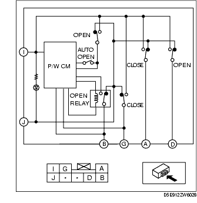
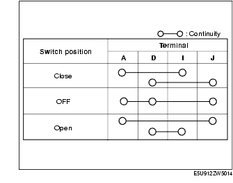
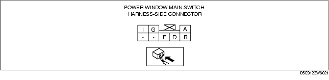
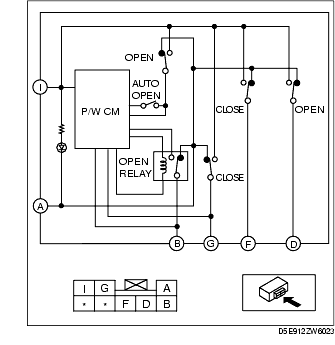
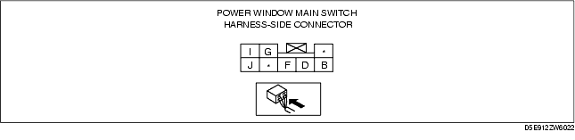

Workshop Manual ➭ BODY & ACCESSORIES ➭ GLASS/WINDOWS/MIRRORS ➭ POWER WINDOW MAIN SWITCH INSPECTION [EXCEPT POWER RETRACTABLE HARDTOP]
POWER WINDOW MAIN SWITCH INSPECTION [EXCEPT POWER RETRACTABLE HARDTOP]
id091200419000
{: #wp1059778}
Auto Open Function For Driver's Side (L.H.D.)
Driver's side
- Measure the voltage at each terminal (other than terminal J).
• If the voltage is not as specified in the Terminal Voltage Table, inspect the parts under "Inspection item (s)" and related wiring harnesses.
-
Remove the battery cover.
-
Disconnect the negative battery cable.(See BATTERY REMOVAL/INSTALLATION [L8, LF].)
-
Inspect the power window main switch connector for continuity at terminal J.
-
If the system does not work properly even though the inspection items or related wiring harnesses do not have any malfunction, replace the power window main switch.
|
Signal name {: #wp1060054} |
Connected to {: #wp1060056} |
Measured condition {: #wp1060058} |
Voltage (V)/Continuity {: #wp1060060} |
Inspection item (s) {: #wp1060062} |
|
|---|---|---|---|---|---|
|
B {: #wp1059898} |
Open output {: #wp1059900} |
Power window motor {: #wp1059956} |
While door glass is opening {: #wp1059959} |
B+ {: #wp1059962} |
• Power window motor (See POWER WINDOW MOTOR INSPECTION.) {: #wp1059965} • Related wiring harnesses {: #wp1060288} |
|
While door glass is closing {: #wp1060102} |
1.0 or less {: #wp1060105} |
||||
|
G {: #wp1060112} |
Close output {: #wp1060115} |
Power window motor {: #wp1060118} |
While door glass is opening {: #wp1060121} |
1.0 or less {: #wp1060124} |
• Power window motor (See POWER WINDOW MOTOR INSPECTION.) {: #wp1060127} • Related wiring harnesses {: #wp1060362} |
|
While door glass is closing {: #wp1060140} |
B+ {: #wp1060143} |
||||
|
I {: #wp1060150} |
Power supply {: #wp1060153} |
P/WIND 20A fuse {: #wp1060156} |
Ignition switch at ON {: #wp1060159} |
B+ {: #wp1060162} |
• P/WIND 20A fuse {: #wp1060165} • Related wiring harnesses {: #wp1060426} |
|
J {: #wp1060169} |
GND {: #wp1060172} |
Body ground {: #wp1060175} |
Under any condition : Inspect for continuity to ground {: #wp1060178} |
Continuity detected {: #wp1060181} |
• GND {: #wp1060184} |
Passenger's side
- Verify that the continuity between the power window main switch terminals is as indicated in the table.{: #wp1060494}


• If not as indicated in the table, replace the power window main switch.
- Apply battery positive voltage to terminal I, and connect the ground to terminal J, and then verify that the light emitting diode illuminates.
• If not as specified, replace the power window main switch.
Auto Open Function For Driver's Side (R.H.D.)
Driver's side
- Measure the voltage at each terminal (other than terminal A).
• If the voltage is not as specified in the Terminal Voltage Table, inspect the parts under "Inspection item (s)" and related wiring harnesses.
-
Remove the battery cover.
-
Disconnect the negative battery cable.(See BATTERY REMOVAL/INSTALLATION [L8, LF].)
-
Inspect the power window main switch connector for continuity at terminal A.
-
If the system does not work properly even though the inspection items or related wiring harnesses do not have any malfunction, replace the power window main switch.

|
Signal name {: #wp1060854} |
Connected to {: #wp1060856} |
Measured condition {: #wp1060858} |
Voltage (V)/Continuity {: #wp1060860} |
Inspection item (s) {: #wp1060862} |
|
|---|---|---|---|---|---|
|
A {: #wp1060698} |
GND {: #wp1060700} |
Body ground {: #wp1060756} |
Under any condition : Inspect for continuity to ground {: #wp1060759} |
Continuity detected {: #wp1060762} |
• GND {: #wp1060765} |
|
B {: #wp1060893} |
Open output {: #wp1060896} |
Power window motor {: #wp1060899} |
While door glass is opening {: #wp1060902} |
B+ {: #wp1060905} |
• Power window motor (See POWER WINDOW MOTOR INSPECTION.) {: #wp1060908} • Related wiring harnesses {: #wp1061126} |
|
While door glass is closing {: #wp1060921} |
1.0 or less {: #wp1060924} |
||||
|
G {: #wp1060931} |
Close output {: #wp1060934} |
Power window motor {: #wp1060937} |
While door glass is opening {: #wp1060940} |
1.0 or less {: #wp1060943} |
• Power window motor (See POWER WINDOW MOTOR INSPECTION.) {: #wp1060946} • Related wiring harnesses {: #wp1061200} |
|
While door glass is closing {: #wp1060959} |
B+ {: #wp1060962} |
||||
|
I {: #wp1060969} |
Power supply {: #wp1060972} |
P/WIND 20A fuse {: #wp1060975} |
Ignition switch at ON {: #wp1060978} |
B+ {: #wp1060981} |
• P/WIND 20A fuse {: #wp1060984} • Related wiring harnesses {: #wp1061264} |
Passenger's side
- Verify that the continuity between the power window main switch terminals is as indicated in the table.{: #wp1061294}

• If not as indicated in the table, replace the power window main switch.
- Apply battery positive voltage to terminal I, and connect the ground to terminal A, and then verify that the light emitting diode illuminates.
• If not as specified, replace the power window main switch.
Driver And Passenger Side Auto Opne Function
- Measure the voltage at each terminal (other than terminal G).
• If the voltage is not as specified in the Terminal Voltage Table, inspect the parts under "Inspection item (s)" and related wiring harnesses.
-
Remove the battery cover.
-
Disconnect the negative battery cable.(See BATTERY REMOVAL/INSTALLATION [L8, LF].)
-
Inspect the power window main switch connector for continuity at terminal G.
-
If the system does not work properly even though the inspection items or related wiring harnesses do not have any malfunction, replace the power window main switch.

|
Signal name {: #wp1061650} |
Connected to {: #wp1061652} |
Measured condition {: #wp1061654} |
Voltage (V)/Continuity {: #wp1061656} |
Inspection item (s) {: #wp1061658} |
|
|---|---|---|---|---|---|
|
G {: #wp1061494} |
GND {: #wp1061496} |
Body ground {: #wp1061552} |
Under any condition : Inspect for continuity to ground {: #wp1061555} |
Continuity detected {: #wp1061558} |
• GND {: #wp1061561} |
|
J {: #wp1061689} |
Open output {: #wp1061692} |
Power window motor (LH) {: #wp1061695} |
While door glass is opening {: #wp1061698} |
B+ {: #wp1061701} |
• Power window motor (See POWER WINDOW MOTOR INSPECTION.) {: #wp1061704} • Related wiring harnesses {: #wp1061922} |
|
While door glass is closing {: #wp1061717} |
1.0 or less {: #wp1061720} |
||||
|
I {: #wp1061727} |
Close output {: #wp1061730} |
Power window motor (LH) {: #wp1061733} |
While door glass is opening {: #wp1061736} |
1.0 or less {: #wp1061739} |
• Power window motor (See POWER WINDOW MOTOR INSPECTION.) {: #wp1061742} • Related wiring harnesses {: #wp1061996} |
|
While door glass is closing {: #wp1061755} |
B+ {: #wp1061758} |
||||
|
F {: #wp1061765} |
Open output {: #wp1061768} |
Power window motor (RH) {: #wp1061771} |
While door glass is opening {: #wp1061774} |
B+ {: #wp1061777} |
• Power window motor (See POWER WINDOW MOTOR INSPECTION.) {: #wp1061780} • Related wiring harnesses {: #wp1062080} |
|
While door glass is closing {: #wp1061793} |
1.0 or less {: #wp1061796} |
||||
|
D {: #wp1062098} |
Close output {: #wp1062101} |
Power window motor (RH) {: #wp1062104} |
While door glass is opening {: #wp1062107} |
1.0 or less {: #wp1062110} |
• Power window motor (See POWER WINDOW MOTOR INSPECTION.) {: #wp1062113} • Related wiring harnesses {: #wp1062220} |
|
While door glass is closing {: #wp1062132} |
B+ {: #wp1062135} |
||||
|
B {: #wp1062239} |
Power supply {: #wp1062242} |
P/WIND 20A fuse {: #wp1062245} |
Ignition switch at ON {: #wp1062248} |
B+ {: #wp1062251} |
• P/WIND 20A fuse {: #wp1062254} • Related wiring harnesses {: #wp1062311} |